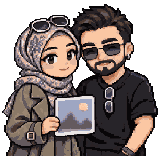

CESKACAN / GÖRSEL STÜDYOSU
Görsellerin.
Tam istediğin gibi.
Dönüştür, hafiflet, yeniden boyutlandır. Biraz daha netlik gerektiğinde, iyileştir.

Cihazında çalışır.
Ücretsiz görsel araçları. Üyelik gerekmez.
01 / GÖRSELLER
ÖnceSonra
Ayarları değiştirdin. İndirilebilir dosya önceki ayarlarla hazırlandı.
Görseller
Küçük notlar.
Dosyalarım nereye gidiyor?
Yerel araçlar görselleri cihazında işler. Sayfayı yenilediğinde çalışma alanı temizlenir.
Sunucuda onarma, görseli FileForge sunucusuna gönderir. Görsel ve sonuç işlem sırasında bellekte tutulur.
Kalite artırma nasıl çalışıyor?
Fotoğraf ve Ultra seçenekleri eğitilmiş süper çözünürlük modelleriyle çalışır. Sonucu %100 görünümde karşılaştırabilirsin.
Hangi görselleri kullanabilirim?
Durağan JPG, PNG ve WebP. En fazla 10 dosya, dosya başına 25 MB. Girişler 24 MP, çıktılar 16 MP ve 8192 px ile sınırlıdır.